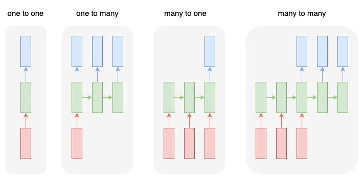
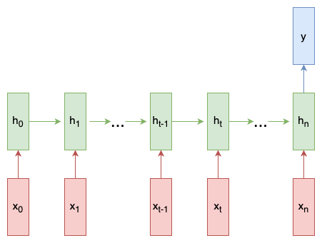
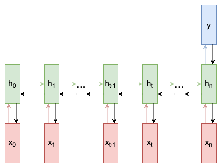
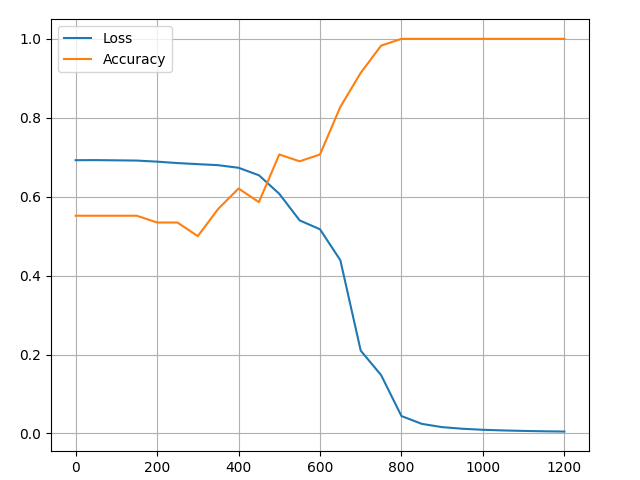
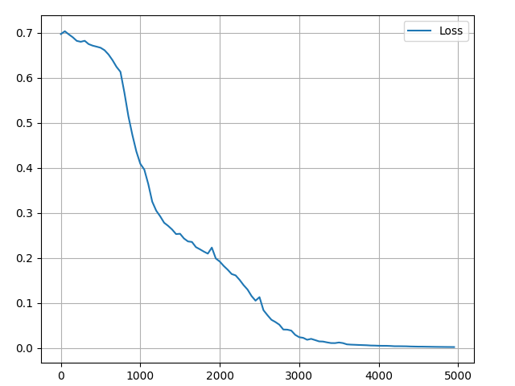

4.1 RNN from Scratch
A simple walkthrough of what RNNs are, how they work, and how to build one from scratch in Python!
Created Date: 2025-05-07
Recurrent Neural Networks (RNNs) are a kind of neural network that specialize in processing sequences. They’re often used in Natural Language Processing (NLP) tasks because of their effectiveness in handling text. In this post, we’ll explore what RNNs are, understand how they work, and build a real one from scratch (using only NumPy) in Python. Complete implementation in the file rnn_classify_stratch.py.
This post assumes a basic knowledge of neural networks. Section 1.6 Neural Network from Scratch covers everything you’ll need to know, so I’d recommend reading that first.
Let’s get into it!
4.1.1 The Why
One issue with vanilla neural nets (and also CNNs) is that they only work with pre-determined sizes: they take fixed-size inputs and produce fixed-size outputs. RNNs are useful because they let us have variable-length sequences as both inputs and outputs. Here are a few examples of what RNNs can look like:

This ability to process sequences makes RNNs very useful. For example:
Machine Translation (e.g. Google Translate) is done with “many to many” RNNs. The original text sequence is fed into an RNN, which then produces translated text as output.
Sentiment Analysis (e.g. Is this a positive or negative review?) is often done with “many to one” RNNs. The text to be analyzed is fed into an RNN, which then produces a single output classification (e.g. This is a positive review).
Later in this post, we’ll build a “many to one” RNN from scratch to perform basic Sentiment Analysis.
4.1.2 The How
Let’s consider a “many to many” RNN with inputs \(x_0, x_1, \cdots , x_n\) that wants to produce outputs \(y_0, y_1, \cdots , y_n\). These \(x_i\) and \(y_i\) are vectors and can have arbitrary dimensions.
RNNs work by iteratively updating a hidden state \(h\), which is a vector that can also have arbitrary dimension. At any given step \(t\):
The next hidden state \(h_t\) is calculated using the previous hidden state \(h_{t-1}\) and the next input \(x_t\).
The next output \(y_t\) is calculated using \(h_t\).

Here’s what makes a RNN recurrent: it uses the same weights for each step. More specifically, a typical vanilla RNN uses only 3 sets of weights to perform its calculations:
\(W_{xh}\) - used for all \(x_t \rightarrow h_t\) links.
\(W_{hh}\) - used for all \(h_{t-1} \rightarrow h_t\) links.
\(W_{hy}\) - used for all \(h_t \rightarrow y_t\) links.
We’ll also use two biases for our RNN:
\(b_h\) - added when calculating \(h_t\).
\(b_y\) - added when calculating \(y_t\).
We’ll represent the weights as matrices and the biases as vectors. These 3 weights and 2 biases make up the entire RNN!
Here are the equations that put everything together:
\(h_t = tanh(W_{xh} x_t + W_{hh} h_{t-1} + b_h)\)
\(y_t = W_{hy} h_t + b_y\)
Don't skim over these equations. Stop and stare at this for a minute. Also, remember that the weights are matrices and the other variables are vectors.
All the weights are applied using matrix multiplication, and the biases are added to the resulting products. We then use tanh as an activation function for the first equation (but other activations like sigmoid can also be used).
No idea what an activation function is? Read section 2.4 Activation Function.
4.1.3. The Problem
Let’s get our hands dirty! We’ll implement an RNN from scratch to perform a simple Sentiment Analysis task: determining whether a given text string is positive or negative.
Here are a few samples from the small dataset I put together for this post:
| Text | Positive? |
|---|---|
| i am good | True |
| i am bad | False |
4.1.4 The Plan
Since this is a classification problem, we’ll use a “many to one” RNN. This is similar to the “many to many” RNN we discussed earlier, but it only uses the final hidden state to produce the one output \(y\):

Each \(x_i\) will be a vector representing a word from the text. The output \(y\) will be a vector containing two numbers, one representing positive and the other negative. We’ll apply Softmax to turn those values into probabilities and ultimately decide between positive / negative.
Let’s start building our RNN!
4.1.5 The Pre-Processing
The dataset I mentioned earlier consists of two Python dictionaries train_data and test_data:
train_data = {
'good': True,
'bad': False,
# ... more data
}
test_data = {
'this is happy': True,
'i am good': True,
# ... more data
}We’ll have to do some pre-processing to get the data into a usable format. To start, we'll construct a vocabulary of all words that exist in our data:
# Create the vocabulary.
vocab = list(set([w for text in simple_text.train_data.keys()
for w in text.split(' ')]))
vocab_size = len(vocab)
print(str(vocab_size), 'unique words found')18 unique words found
vocab now holds a list of all words that appear in at least one training text. Next, we'll assign an integer index to represent each word in our vocab:
word_to_idx = {w: i for i, w in enumerate(vocab)}
idx_to_word = {i: w for i, w in enumerate(vocab)}
print(word_to_idx){'was': 0, 'good': 1, 'right': 2, 'earlier': 3, 'bad': 4, 'sad': 5,
'this': 6, 'or': 7, 'now': 8, 'is': 9, 'at': 10,
'not': 11, 'all': 12, 'i': 13, 'very': 14, 'happy': 15,
'am': 16, 'and': 17}
We can now represent any given word with its corresponding integer index! This is necessary because RNNs can’t understand words - we have to give them numbers.
Finally, recall that each input \(x_i\) to our RNN is a vector. We'll use one-hot vectors, which contain all zeros except for a single one. The "one" in each one-hot vector will be at the word's corresponding integer index.
Since we have 18 unique words in our vocabulary, each \(x_i\) will be a 18-dimensional one-hot vector.
def create_inputs(text):
inputs = []
for w in text.split(' '):
v = numpy.zeros((vocab_size, 1))
v[word_to_idx[w]] = 1
inputs.append(v)
return inputs
example = list(simple_text.test_data.keys())[0]
print(example)
print(numpy.array(create_inputs(example)).shape)this is happy (3, 18, 1)
We’ll use createInputs() later to create vector inputs to pass in to our RNN.
4.1.6 The Forward Phase
It's time to start implementing our RNN! We'll start by initializing the 3 weights and 2 biases our RNN needs:
Note: We're dividing by 1000 to reduce the initial variance of our weights. This is not the best way to initialize weights, but it's simple and works for this post.
We use numpy.random.default_rng(seed=0) to initialize our weights from the standard normal distribution.
Next, let's implement our RNN's forward pass. Remember these two equations (calucate \(h_t\) and \(y_t\)) we saw earlier? Here are those same equations put into code:
class RNN:
# ...
def forward(self, inputs):
'''
Perform a forward pass of the RNN using the given inputs.
Returns the final output and hidden state.
- inputs is an array of one-hot vectors with shape (vocab_size, 1).
'''
h = numpy.zeros((self.Whh.shape[0], 1))
self.last_inputs = inputs
self.last_hs = {0: h}
# Perform each step of the RNN.
for i, x in enumerate(inputs):
h = numpy.tanh(self.Wxh @ x + self.Whh @ h + self.bh)
self.last_hs[i + 1] = h
# Compute the output.
y = self.Why @ h + self.by
return y, hPretty simple, right? Note that we initialized \(h\) to the zero vector for the first step, since there’s no previous \(h\) we can use at that point.
Let’s try it out:
# Initialize our RNN!
rnn = RNN(vocab_size, 2)
sample = create_inputs('i am very good')
out, h = rnn.forward(sample)
probs = softmax(out)
print(probs)[[0.50000238]
[0.49999762]]
Our RNN works, but it’s not very useful yet. Let’s change that…
4.1.7 The Backward Phase
In order to train our RNN, we first need a loss function. We’ll use cross-entropy loss, which is often paired with Softmax. Here’s how we calculate it:
where \(p_c\) is our RNN's predicted probability for the correct class (positive or negative). For example, if a positive text is predicted to be 90% positive by our RNN, the loss is:
Now that we have a loss, we’ll train our RNN using gradient descent to minimize loss. That means it’s time to derive some gradients!
The following section assumes a basic knowledge of multivariable calculus. You can skip it if you want, but I recommend giving it a skim even if you don’t understand much. We’ll incrementally write code as we derive results, and even a surface-level understanding can be helpful.
Ready? Here we go.
4.1.7.1 Definitions
First, some definitions:
Let \(y\) represent the raw outputs from our RNN.
Let \(p\) represent the final probabilities: \(p = softmax(y)\).
Let \(c\) refer to the true label of a certain text sample, a.k.a. the “correct” class.
Let \(L\) be the cross-entropy loss: \(L = -ln(p_c)\).
Let \(W_{xh}\), \(W_{hh}\), and \(W_{hy}\) be the 3 weight matrices in our RNN.
Let \(b_h\) and \(b_y\) be the 2 bias vectors in our RNN.
4.1.7.2 Setup
Next, we need to edit our forward phase to cache some data for use in the backward phase. While we’re at it, we’ll also setup the skeleton for our backwards phase. Here’s what that looks like:
class RNN:
def forward(self, inputs):
# ...
self.last_inputs = inputs
self.last_hs = {0: h}
# Perform each step of the RNN
for i, x in enumerate(inputs):
h = np.tanh(self.Wxh @ x + self.Whh @ h + self.bh)
self.last_hs[i + 1] = h
# ...
def backprop(self, dy, learn_rate=2e-2):
'''
Perform a backward pass of the RNN.
- d_y (dL/dy) has shape (output_size, 1).
- learn_rate is a float.
'''
pass4.1.7.3 Gradients
It’s math time! We’ll start by calculating \(\frac{\partial{L}}{\partial{y}}\). We know:
I’ll leave the actual derivation of \(\frac{\partial{L}}{\partial{y}}\) using the Chain Rule as an exercise for you, but the result comes out really nice:
For example, if we have \(p = [0.2, 0.2, 0.6]\) and the correct class is \(c = 0\), then we’d get \(\frac{\partial{L}}{\partial{y}} = [-0.8, 0.2, 0.6]\). This is also quite easy to turn into code:
# build dl/dy
dl_dy = probs
dl_dy[target] -= 1
# backward
rnn.backprop(dl_dy)Nice. Next up, let’s take a crack at gradients for \(W_{hy}\) and \(b_y\), which are only used to turn the final hidden state into the RNN’s output. We have:
\(\frac{\partial L}{\partial W_{hy}} = \frac{\partial L}{\partial y} \cdot \frac{\partial y}{\partial W_{hy}}\)
\(y = W_{hy} h_n + b_y\)
where \(h_n\) is the final hidden state. Thus:
\(\frac{\partial y}{\partial W_{hy}} = h_n\)
\(\frac{\partial L}{\partial W_{hy}} = \frac{\partial L}{\partial y} \cdot h_n\)
Similarly, we can get:
\(\frac{\partial{y}}{\partial{b_y}} = 1\)
\(\frac{\partial{L}}{\partial{b_y}} = \frac{\partial{L}}{\partial{y}}\)
We can now start implementing backprop()!
class RNN:
# ...
def backprop(self, dy, learn_rate=2e-2):
'''
Perform a backward pass of the RNN.
- d_y (dL/dy) has shape (output_size, 1).
- learn_rate is a float.
'''
# dy (dl/dy) has shape (output_size, 1)
n = len(self.last_inputs)
# calculate dl/dwhy and dl/dby
dwhy = dy @ self.last_hs[n].T
dby = dyReminder: We created self.last_hs in forward() earlier.
Finally, we need the gradients for \(W_{hh}\), \(W_{xh}\), and \(b_h\), which are used every step during the RNN. We have:
because changing \(W_{xh}\) affects every \(h_t\), which all affect \(y\) and ultimately \(L\). In order to fully calculate the gradient of \(W_{xh}\), we’ll need to backpropagate through all timesteps, which is known as Backpropagation Through Time (BPTT):

\(W_{xh}\) is used for all \(x_t \rightarrow h_t\) forward links, so we have to backpropagate back to each of those links.
Once we arrive at a given step \(t\), we need to calculate \(\frac{\partial{h_t}}{\partial{W_{xh}}}\):
The derivative of \(tanh\) is well-known:
We use Chain Rule like usual:
Similarly:
\(\frac{\partial{h_t}}{\partial{W_{hh}}} = (1 - h_t^2) \cdot h_{t-1}\)
\(\frac{\partial{h_t}}{\partial{b_h}} = (1 - h_t^2)\)
The last thing we need is \(\frac{\partial{y}}{\partial{h_t}}\). We can calculate this recursively:
We’ll implement BPTT starting from the last hidden state and working backwards, so we’ll already have \(\frac{\partial{y}}{\partial{h_{t+1}}}\) by the time we want to calculate \(\frac{\partial y}{\partial {h_t}}\)! The exception is the last hidden state \(h_n\):
We now have everything we need to finally implement BPTT and finish backprop():
class RNN:
# ...
def backprop(self, dy, learn_rate=2e-2):
'''
Perform a backward pass of the RNN.
- d_y (dL/dy) has shape (output_size, 1).
- learn_rate is a float.
'''
# dy (dl/dy) has shape (output_size, 1)
n = len(self.last_inputs)
# calculate dl/dwhy and dl/dby
dwhy = dy @ self.last_hs[n].T
dby = dy
# initialize dl/dwhh, dl/dwxh, and dl/dbh to zero
dwhh = numpy.zeros(self.Whh.shape)
dwxh = numpy.zeros(self.Wxh.shape)
dbh = numpy.zeros(self.bh.shape)
# calculate dl/dh for the last h
# dl/dh = dl/dy * dy/dh
dh = self.Why.T @ dy
# backpropagation through time
for t in reversed(range(n)):
# an intermediate value: dl/dh * (1 - h^2)
temp = ((1 - self.last_hs[t+1] ** 2) * dh)
# dl/db = dl/dh * (1 - h^2)
dbh += temp
# dl/dwhh = dl/dh * (1 - h^2) * h_{t-1}
dwhh += temp @ self.last_hs[t].T
# dl/dwxh = dl/dh * (1 - h^2) * x
dwxh += temp @ self.last_inputs[t].T
# next dl/dh = dl/dh * (1 - h^2) * Whh
dh = self.Whh.T @ temp
# clip to prevent exploding gradients
for d in [dwxh, dwhh, dwhy, dbh, dby]:
numpy.clip(d, -1, 1, out=d)
# update weights and biases using gradient descent
self.Whh -= learn_rate * dwhh
self.Wxh -= learn_rate * dwxh
self.Why -= learn_rate * dwhy
self.bh -= learn_rate * dbh
self.by -= learn_rate * dbyA few things to note:
We've merged \(\frac{\partial L}{\partial y} \cdot \frac{\partial y}{\partial h}\) into \(\frac{\partial L}{\partial h}\) for convenience.
We’re constantly updating a
d_hvariable that holds the most recent \(\frac{\partial{L}}{\partial{h_{t+1}}}\), which we need to calculate \(\frac{\partial L}{\partial h_t}\).After finishing BPTT, we
numpy.clip()gradient values that are below -1 or above 1. This helps mitigate the exploding gradient problem, which is when gradients become very large due to having lots of multiplied terms. Exploding or vanishing gradients are quite problematic for vanilla RNNs - more complex RNNs like LSTMs are generally better-equipped to handle them.Once all gradients are calculated, we update weights and biases using gradient descent.
We’ve done it! Our RNN is complete.
4.1.8 The Culmination
It’s finally the moment we been waiting for - let’s test our RNN!
First, we’ll write a helper function to process data with our RNN:
def process(data, backprop=True):
items = list(data.items())
random.shuffle(items)
loss = 0
num_correct = 0
for x, y in items:
inputs = create_inputs(x)
target = int(y)
# forward
out, _ = rnn.forward(inputs)
probs = softmax(out)
# calculate loss / accuracy
loss -= numpy.log(probs[target])
num_correct += int(numpy.argmax(probs) == target)
if backprop:
# build dl/dy
dl_dy = probs
dl_dy[target] -= 1
# backward
rnn.backprop(dl_dy)
# Convert NumPy scalar to Python scalar.
if isinstance(loss, numpy.ndarray):
loss = loss.item()
return loss / len(data), num_correct / len(data)Now, we can write the training loop:
losses = []
accuracies = []
# training loop
for epoch in range(500):
train_loss, train_acc = process(simple_text.train_data)
if (epoch + 1) % 20 == 0:
losses.append(train_loss)
accuracies.append(train_acc)
print('Epoch %d' % (epoch + 1))
print('Train: loss %.3f | accuracy: %.3f' %
(train_loss, train_acc))
test_loss, test_acc = process(
simple_text.test_data, backprop=False)
print('Test: loss %.3f | accuracy: %.3f' % (test_loss, test_acc))Running rnn_classify_stratch.py should output something like this:
Train: loss 0.011 | accuracy: 1.000 Test: loss 0.016 | accuracy: 1.000 Epoch 420 Train: loss 0.009 | accuracy: 1.000 Test: loss 0.012 | accuracy: 1.000 Epoch 440 Train: loss 0.007 | accuracy: 1.000 Test: loss 0.010 | accuracy: 1.000 Epoch 460 Train: loss 0.006 | accuracy: 1.000 Test: loss 0.009 | accuracy: 1.000 Epoch 480 Train: loss 0.005 | accuracy: 1.000 Test: loss 0.007 | accuracy: 1.000 Epoch 500 Train: loss 0.005 | accuracy: 1.000 Test: loss 0.006 | accuracy: 1.000
Not bad from a RNN we built ourselves.
We can visualize the training process:

4.1.9 PyTorch Implement
While building an RNN from scratch is a great learning experience, it’s not very practical. In real-world applications, we’d use a proper ML library like PyTorch or TensorFlow to build our RNNs. File rnn_classify_torch.py rewrite above process:
Epoch 1/100, loss: 0.6968 Epoch 11/100, loss: 0.6665 Epoch 21/100, loss: 0.4091 Epoch 31/100, loss: 0.2538 Epoch 41/100, loss: 0.1921 Epoch 51/100, loss: 0.1132 Epoch 61/100, loss: 0.0243 Epoch 71/100, loss: 0.0126 Epoch 81/100, loss: 0.0054 Epoch 91/100, loss: 0.0034 Test accuracy: 1.0000

4.1.10 The End
That’s it! In this post, we completed a walkthrough of Recurrent Neural Networks, including what they are, how they work, why they’re useful, how to train them, and how to implement one. There’s still much more you can do, though:
Learn about Long short-term memory networks, a more powerful and popular RNN architecture, or about Gated Recurrent Units (GRUs), a well-known variation of the LSTM.
Experiment with bigger / better RNNs using proper ML libraries like Tensorflow, JAX, or PyTorch.
Read about Bidirectional RNNs, which process sequences both forwards and backwards so more information is available to the output layer.
Try out Word Embeddings like GloVe or Word2Vec, which can be used to turn words into more useful vector representations.
Check out the Natural Language Toolkit (NLTK), a popular Python library for working with human language data.
Thanks for reading!